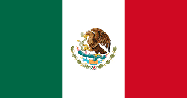

Saiba mais sobre os países


A Copa do Mundo de 2026 marcará uma expansão histórica no futebol mundial. Pela primeira vez, o torneio
contará com 48 seleções participantes, reunindo mais países e torcedores do que nunca.
Ao longo de 39 dias de competição, serão disputadas 104 partidas, tornando esta a
maior edição da história da Copa do Mundo.
Os jogos acontecerão em 16 cidades-sede distribuídas entre os três países anfitriões.
No Canadá, as cidades-sede serão Toronto e Vancouver.
No México, os jogos serão realizados em Guadalajara, Cidade do México e Monterrey.
Já nos Estados Unidos, as partidas acontecerão em Atlanta, Boston, Dallas, Houston, Kansas City, Los
Angeles, Miami, Nova York/Nova Jersey, Filadélfia, São Francisco e Seattle.
